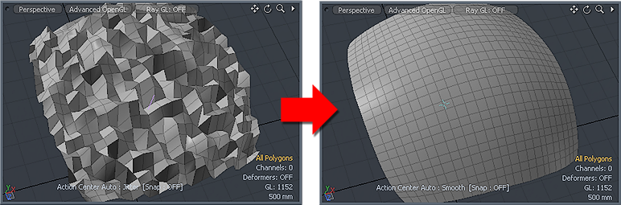

In this article we will look at different techniques, tricks and things that you can do to improve your affirmation campaigns. These are things that will concentrate on how you perform your affirmation campaigns with an idea to improve the “purity”, implementation, and successful implementation of it. All the time trying to control the relative distress associated with change.
These are easy additions for you all. It won’t take too much extra effort to incorporate these items.
Multiple daily affirmations
Yes, of course you can run your campaign multiple times in a day.You can have a prayer affirmation period (say) in the morning, and then another at the end of the day. You can run them three times a day. You can run them four times a day. Heck! You can run them ten times a day if you want and you have the time.
Just remember that when you go into your pause phase that it must be absolute. During the pause, you must come to a full and complete stop. No exceptions. Do not even think about it. Stop and move on with your life. Then when the pause time is completed, you can run your follow-up campaign.
Now, running multiple daily affirmations most certainly strengthens the affirmations. You are spending more time thinking and dwelling on the affirmations. So the effects are doubled if you run two affirmation groups a day. Tripled if you run three affirmation groups a day, and quadruped if you run four groups a day.
The trade off is that things will happen more aggressively; more saturated. And, obviously, it will take up more of your time to do so. So with everything there are tradeoffs. If you have the time to run two campaign groups a day (say once in the morning and once in the afternoon) then you will have stronger effects.
Good things happen faster. The old peels away sooner. The discord associated with change increases. Everything is magnified.
So doing your affirmation prayer campaigns in this manner will [1] certainly speed up the implementation of your affirmations. However, it will [2] take up more of your time, and [3] would result in an increase in personal discord (as the old life peels away quicker).
Talisman
Those MM readers who have read the post on “The Intention Experiment” will understand the benefits of having “blessed” items in and around their home and person.
While a person can, themselves, bless an item and empower it with energy, in this case we will refer to things that were blessed by a local religious figure.
It does not matter who this person is, what religion they belong to, or where they are. What matters is that they create a charm; a talisman, that you pay for. Then you take that item and place it near you.
Here’s some blessed Buddha charms…
The procedure is simple…
- Go to a local religious church, temple, shrine or monastery.
- Provide an item for them to bless, or purchased an already blessed item.
- Compensate them for their efforts either financially or through a donation.
I have had numerous things blessed in my life.
- Catholic rosary beads.
- A Catholic medallion of a Saint that I wore around my neck.
- A string of small beads that I wrapped around my wrist. Blessed by Buddha.
- A bracelet of large wooden balls that was blessed by a shaman.
- A special talisman made by a follower of the Golden Dawn occult society.
The effect is like adding an octane additive to your gasoline in your car. It improves the quality of your gas and your automobile runs better. It no longer hesitates. It is quicker in response, smoother in operation, and quieter. As well as the engine running cooler.
For a given prayer affirmation campaign, it will act like an “oil” or a “softener”. It will take off the “rough sharp edges” of the jagged hills and mountains that you might encounter in your MWI template.

In today’s profit oriented culture, it is easy to find “blessed” items on the internet that may or may not actually be blessed.
I suggest that you can buy what ever item you want off the internet, but assume that it is not blessed. Then take it to your local religious temples, church or shrine and ask for it to be blessed.
If you go to a church or a temple, and they are selling something that has been blessed, then that is fine as well. The idea is that it MUST be actually blessed. Not simply advertised as blessed.
Finally, keep in mind that blessed items “lose their charge” over time. Depending on who you are, and the person performing the blessing, the “power” and effectiveness of the charm has a half-life. Some charms might dissipate over a period of months, while others might take decades. I would advise a new talisman every year based upon your individual situation, needs and present on-going affirmation campaign.
A place to pray
It is critically important that you perform and conduct your affirmations in a quiet place where you can concentrate and not be interrupted. For some people [A] this is the shower. No kidding. They put the affirmations in a waterproof sleeve, tape it to the wall and read it out loud while they shower.
For other people [B], being alone in their car (or truck) as they to and from work is perfect. They just fire the up the engine than then when they are at a place where no one can bother them, they park the vehicle and sit there and read off the affirmations out loud.
MM [C] likes to read his affirmations in the early morning when no one else is around and he has the peace and quiet to concentrate.
Some people [D] like to go into Catholic churches, and just go there and pray. The churches are open all the time and people go in to pray. The only thing with this is that you must whisper your prayers. You cannot say them out loud.
The good thing about this is that you can perform your prayer affirmations anywhere as long as you left alone in peace without being disturbed. Heck, this can even be [E] in a restaurant. You just park yourself at a booth in the back and focus reading your affirmations in a low voice.
You CANNOT multitask affirmations.
It requires your full, undistracted attention. Many people are already doing this. However, if you are not, and your affirmation campaigns are subject to interruption, then you might feel hurried or rushed.
You cannot allow this. You cannot hurriedly rush through your affirmation list. You need to read it slowly and savoring each word for maximum effect.
Never, ever, rush your affirmation readings. Never.
Remember; the longer it takes you to read your affirmation sentence, the stronger the effect. It means that you are spending more time switching from wave to particle form (and back again) while you are reading that affirmation statement.
So I want to stress that there are numerous people trying to multi-task affirmation campaigns, juggling them with the rest of their life. You just cannot do this and have a strong campaign. You need to focus on what you are doing at that time.
Why?
Imagine that you are typing to cook dinner, and reading your affirmations that are sitting there on the counter. Multitasking. You spouse walks in. And the affirmation that you are trying to read is “I live a great, calm and peaceful life.”
This is what it would actually be like…
I live...
The boiling water is very vigorous now, and so you turn the temperature down.
... a great, and...
The Spouse asks you if you bought a new carton of milk, and you answer that no you didn’t.
...calm and...
You switch the water off and put some noodles in the hot water.
...peaceful...
The spouse comes in and goes out. Slamming the door behind. Bam!
...life.
In truth, you are not really running an affirmation statement this way. Instead all you are doing is adding disjointed words and phrases to your already hectic life. The end result would be that your life might mellow out a little bit, but the effects will not be the same as if you were to read off the entire affirmation sentence undisturbed.
Avoidance of places with “bad vibes”
Thoughts are “sticky”. They tend to fall to, and get absorbed by physical things. And like the talisman listed up above, good pure thoughts and blessings are possible. As are curses, and negative thoughts.
We have all heard of “haunted houses”. Cursed cars. And damned places. These locations and physical items have “bad energy” or “bad vibes”.
Some places are just THICK with the bad feelings and dearth of happy, positive energy. Go to any Family Dollar store in a distressed community. Go to a car lot in one of the poorer sections of town and sit in some of those cars. The hate, disgust, anger, and oily blackness can be tangible.
It can be felt.
You want to avoid these places, and you want to avoid purchasing anything from these places. You don’t want them to have anything to do with you or your family. Keep and stay away.
Reading affirmations after Hemi-Sync meditations
In today’s life, there are all sorts of distractions, and battles (for your mind) going on. These elements create a noise that jars your soul, and disrupts your being. Being so “shaken”, it’s often difficult to feel calm when you are reading off your affirmations Sure, you read them, but somehow (it feels like) it’s not really getting any “traction”. You don’t feel like they are “fully released” to the universe.
The best way to avoid this is to meditate, or center yourself prior to reading the affirmations.
I have provided the Hemi-Sync systems to help you do this.
If you are not centered: your consciousness is not at the center, then your affirmation campaigns will not be operating effectively. Like an out of tune car engine, it might work, but not that well. You need to center yourself.
If you can have yourself centered most of the time, you don’t need to perform affirmations after a centering exercise. You just run Hemi-synci once a week, and do your affirmations normally. However, what I am seeing is this amazing level of strife and discord in the United States today. As well as in parts of Africa, and parts of Europe. You need to center your consciousness.
Physical Contact
Some cultures prevent physical contact, others allow it but only in the privacy in your own home. Having physical contact is a fundamental aspect of being a living, breathing, human being. You are NOT a machine.
When I was working in Boston, I was called in to the HR office because I had touched a fellow co-worker on the elbow. I personally believe that leaders need to transmit their intentions by tactile sensations. But that’s not in accordance with modern corporate culture. Instead humans are numbers that live in cubicles, perform tasks in front of machines, and obey strict behavioral and dress norms.
Anyways, when I talk to staff, co-workers and colleagues, as well as customers and other businessmen, I touch them. I give them handshakes. Some (from the West) I give hugs to. I touch the thigh, or knee cap. I touch the shoulder or the elbow.
Anyways, this touching is an important part of what being a human is all about. we connect with others.
It doesn’t matter if it is a dog, a cat, a horse, a spouse, a child, a friend… whatever. Do not be afraid of communicating though connections. Connect with others. When you do, you will find that your quantum network of connections expands. And for affirmation campaigns, you will discover that it acts as a kind of enhanced antenna or radar-dish.
So go forth and be a touchy-feely kind of person.
Humans biologically need touch, it’s built right into our physiology. When we are babies, touch is a crucial part of our ability to regulate our nervous systems and feel safe. When we’re very young, our bodies have not yet built the ability to self-regulate (feel safety and comfort), and thus our caregivers play the important role of not only touching to bring regulation and safety, but also using facial expressions to send the message that ‘all is OK.’
Further, humans thrive in a sense of community and connection. When we are too isolated, without a deep and dedicated practice like monk’s might do in a cave in Tibet, we begin to lose the benefits of co-regulation, and in turn our psychology can begin to suffer over time. Humans have built incredible things – together – when in community, and touch plays an important role in that.
It most cultures around the world, hugging is part of daily life. Other cultures might decide to greet one another with cheek kissing instead, but touch is often a common denominator. But it’s true, there are places that may be ‘less touch-y’ and will certainly find other ways to connect.
One thing I can say though, especially during this unprecedented time of isolation, make it a point to hug those close to you when you can. Make it a good one, 15 or 20 seconds! Pay attention to how you feel after.
As mentioned, hugging is not the only way we get a sense of co-regulation and connection. Looking into one another’s eyes, sensing facial movements and reactions are also important. We have millions of mirror neurons in our brains that are constantly reading what is happening in another person, and sending information to areas of our brain, subconsciously, that tell us how a person might be feeling, for example. When we witness someone taking an action, neurons in our brains respond to that action in the same way as if we were taking that action ourselves – hence ‘mirror neurons.’
This might mean that when we watch a nervous moment in sports for example, although we are not playing, we might take actions like covering our mouths or holding our chest, feeling the nerves the players are likely feeling. As you can imagine, this is not a perfect science. Sometimes we are nervous but the player is cool as a cucumber, but generally, mirror neurons tend to help us connect to what others are feeling or doing, giving us a sense of empathy.
It goes even deeper. Research from Institute of HeartMath has shown that the human heart emits a measurable electromagnetic field that contains information other people can pick up on and decode in their brains. Regardless of how ‘new-agey’ this might sound to some minds, it’s a reality of our physical bodies.
Just think, have you ever walked into a room with multiple people in it and noticed the energy of it? Perhaps you noticed right away it was very tense or very jovial. This sense likely comes from having an awareness of how our electro magnetic field is interacting with the collective field of the room.
What you’re feeling is how someone’s general emotional state is affecting the field they emit. The more we feel tension, anxiety, or depression for example, the more we also put that signal out into our communities. Now, this isn’t a call to get stressed out about how we’re affecting others, this is simply a realization of what’s going on.
In our current chaotic world, it’s quite common to feel anxious or uncertain about what’s happening, and acknowledging that is OK is perfectly fine. The next question becomes: how can I manage my emotional state and create a a felt sense of calm? (Which of course will change the field you emit as well.)
-Collective evolution
Conclusion
The majority of these suggestions are “add ons” to your current affirmation campaign that will enable you to fine-tune them to be more efficient and effective.
Some of the readership might already be incorporating these elements while others might have overlooked some key elements. But if you really start to implement all of them, you will be able to “turbo-charge” your affirmations for more efficient and effective implementation.
I hope that all of this will be beneficial.